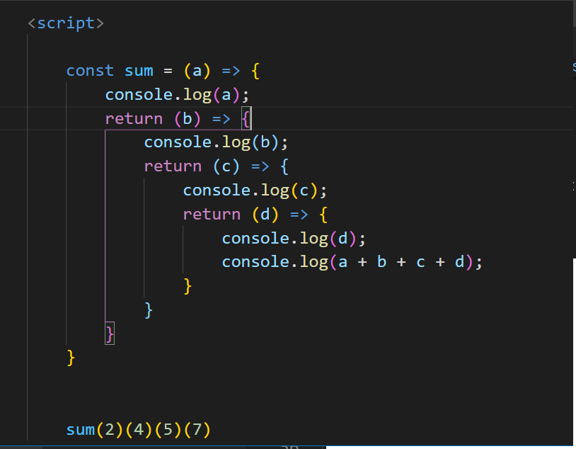

3 What is function currying in JS?
Currying is a technique of evaluating function with multiple arguments, into
sequence of functions with single argument.In other words, when a function, instead of taking all
arguments at one time, takes the first one and return a new function that takes the second one and
returns a new function which takes the third one, and so forth, until all arguments have been
fulfilled
How to Solve this:- sum(2)(4)(5)(7)
